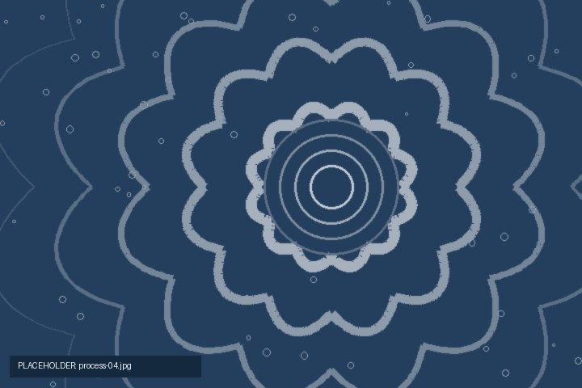
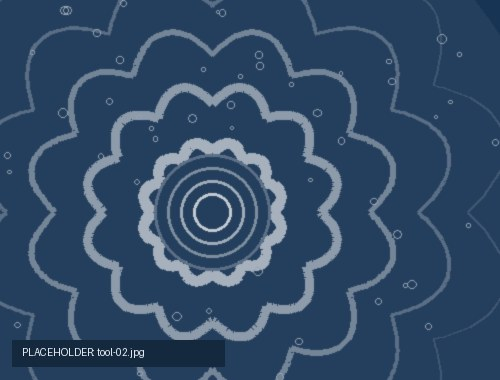
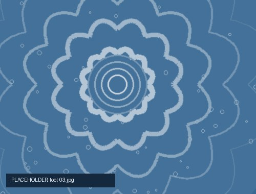
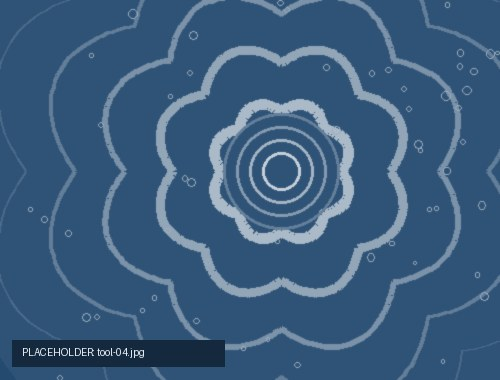

墩头蓝的蓝，不是简单的颜色，而是一段旅程的终点：白布经折叠捆扎、入缸浸染、出缸氧化、拆线成纹，在时间里慢慢变成独一无二的蓝白画卷。
机器可以复制图案，却复制不了每一次浸染的深浅、每一处晕染的偶然。这正是手艺的温度所在。

五道核心工序，环环相扣，缺一不可。

在白布上构思布局，确定团花、几何或写生题材，蓝白的格局在落笔前已胸有成竹。
以折、叠、缝、扎等手法处理布料，被棉线捆紧的地方染液进不去，防染之处便是未来的留白。


布入染缸，反复浸染。蓝靛由植物发酵而来，入缸时布是黄的，出水遇空气才渐渐转蓝。
出缸的布在风与日光下充分氧化，蓝色由浅入深、由青转靛，颜色被一点点"养"了出来。


拆去棉线的一刻最令人期待：深蓝与留白层层展开，独一无二的纹样正式揭幕。
不追求花哨与昂贵，但每一样都关乎最后的成色。

吸色均匀、纤维结实，是纹样清晰的底子。

板蓝、蓼蓝等植物发酵制成，天然温和。

缝扎防染的关键，松紧之间决定纹样成败。

养缸如养人，一缸好靛需要日日照料。